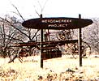
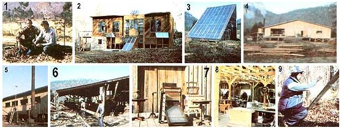

These two Ozark "pioneers" are practicing the more self-reliant lifestyle they preach.
Most of the folks in today's back-to-the-land movement aim-just as does MOTHER herself-at discovering ways of living that are more energy-efficient and self-supporting . . . and that have a minimal impact on the environment. And now that there's a lot of good information available on such lifestyles, the next step-which has so far been achieved by only a handful of individuals and groups-is to combine a number of those isolated ideas and thus create a workable synthesis.
Well, that's just what's beginning to happen at Meadowcreek ... an Ozark community that was born almost three years ago, when two brothers decided to build a sustainable "metaindustrial village" (to borrow a term coined by writer/philosopher William Irwin Thompson). The pair hoped their development would serve as a model of how human settlements in the future might both exist in harmony with their surroundings and offer meaningful lifestyles to their inhabitants.
Following several years of mutual musing over what they saw as a crisis facing modern industrial civilization, David and Wilson Orr sold their individual business and real estate holdings in order to finance the purchase of 1,500 fertile but neglected acres in northern Arkansas's Stone County. In June of 1979 the brothers moved their families to the property, and began the construction of a community that they expect will eventually be able to supply all its own food and energy. The Meadowcreek Project is more than just a futuristic model town, however. . . it was planned-from its inception-to be an educational research center as well, a place where committed individuals can gather to study the challenges of creating systems for sustainable living.
In the final analysis, Meadowcreek is a step taken in preparation for the major transformation that the Orr brothers think our society must soon undergo . . . a process they see as altogether necessary if we're to survive in a world where inexpensive energy, unlimited natural resources, and high biological productivity can no longer be accepted facts of life. Concerned about the increasing centralization of power and capital-and about the stress that those developments place on an already fragile environment-David and Wil concluded that solutions to such problems could best be worked out on a decentralized neighborhood scale . . . and so they set about designing a humancentered community that would rely on organic agriculture and renewable energy sources for its support.
Their first move, after arriving in Arkansas, was to compile a detailed ecological survey of their land. That study included the examination of such environmental factors as soil chemistry, water resources, energy flow, geology, and plant and animal habitats. Using the collected data, the Orrs then drew up a general plan for the development of Meadowcreek, a proposal that emphasizes on-site energy and food production, and proximity between community activity areas. Such factors will limit the project's production and transportation costs and-it's hoped-insure its economic survival. As a result of their awareness that natural ecosystems tend to operate in harmonious closedloop cycles, the brothers decided to pat tern their community after such a system ... stressing diversity, complex relationships, multiple function, and the efficient use of energy.
The survey revealed that they'd settled in a workable location ... a three-milelong valley traversed by Meadowcreek (a confluent of the Little Red River) and rimmed on both sides by high, rocky bluffs that rise 500 feet above the canyon floor. The site offers rich farmland, 1,200 acres of mixed hardwoods and evergreens, and abundant water. And, although the area enjoys the Ozarks' generally mild climate, it's home not only to the region's typical plants and animals, but also to a variety of flora and fauna that are usually found in more arid climes (including prickly pear cactus, coyotes, and scorpions).
Of course, the brothers and their families - plus the few others who joined them early on in their venture - needed some source of income in order to support themselves. At the same time, they strongly believed that any economic activity that might go on at Meadowcreek should be closely tied to the ecosystem of which it would be a part. Therefore, Wil immediately put his business experience to work in planning a wood products complex based on the land's abundant forest resources.
The community's main objective, in managing the timber operation, is to avoid the traditional rural economic situation, in which landowners ship out high-grade raw lumber (and, of course, usually deplete the native forests while doing so) for very low prices. To break the vicious treadmill of declining profits and resource quality, the Meadowcreek lumberjacks first harvest the forests carefully (to preserve species diversity and insure sustained yield), then add as much value as possible to the timber be/ore it's sold . .. by seasoning the raw lumber in a solar wood-drying kiln and converting it into handsome tables, shelves, chessboards, and other finished products.
At present, the Meadowcreek lumber business includes a sawmill, which is powered by a refurbished 1902 steam boiler and engine and turns out an average of 4,000 board feet per day, plus the solar kiln and a large woodshop. The directors plan to soon begin construction of an adjacent mechanical and metalworking shop, which will further increase the community's level of self-sufficiency.
Once the wood products business has developed to its full potential, it'll run entirely on renewable energy. Water for the boiler will be preheated by rooftop solar collectors .. . the steam engine will burn the mill's own waste material . . . and excess heat from the boiler will help run an alcohol fuel still and a wood gasification plant.
The strategy of adding value to products at the production site is also applied to the project's other economic leg, an organic farm that's just now being established. This 300-acre setup will-when completed-include orchards, vineyards, intensive gardens, tree crops, and large greenhouses. Already, project members have put in experimental aquaculture ponds, planted cover crops and blueberries, and purchased 27 head of cattle (which are currently grazing at the far end of the valley). Poultry, bees, and (possibly) dairy goats will join the Meadowcreek livestock population later on.
The community plans to employ biological pest controls, extensive composting, and permaculture design techniques in order to make the agricultural operation as environmentally "benign" as possible . . . and the co-op food processing center-which should be erected later this year-will be heated by solar energy. There, project members will take produce from Meadowcreek's farm (such as berries and grain) and turn it into finished products (such as jams, jellies, and flour) to enable the operation to bring in as great a return as possible from the raw materials.
As the community continues to grow, its founders hope to be able to pay more attention to the finer details of life. A proposed "village green" area-to be located near the existing office building-will include a general store, a community meeting hall, and a visitors center.
Housing, which will likely be built in cooperative "barn-raising" sessions, will follow the example of Meadowcreek's office (the first structure erected at the site): That 2,100-square-foot building is chiefly sunlit and -heated, and generates its own electricity from a panel of photovoltaic cells on the roof. Gray water from the shower and sink of an apartment adjoining the office is recycled to irrigate the basement greenhouse where-you guessed it-vegetables are grown year round. Future Meadowcreek dwellings will make use of similar features, in addition to solar water heaters, attached greenhouses, and composting toilets . . . making them essentially self-sufficient "bioshelters".
Although there are now about 20 people living and working at Meadowcreek (in addition to a few affiliate members who are employed by the project but, as yet, live several miles away), the Orr brothers expect the village to accommodate about 25 families eventually. David and Wil are not really interested, they say, in populating Meadowcreek to its maximum . . . but rather in bringing into the valley only as many residents as are needed to achieve the project's mission, and they stress that the population must also fit into the valley's physical carrying capacity in terms of land, water, and food production. The brothers are selling a few parcels of land near the property's southern boundary, allowing individuals interested in establishing a "sister community" to own threeacre tracts there.
The Orrs hope that, by 1983, they'll have the necessary funds, and enough willing workers, to begin the establishment of what is perhaps their fondest dream ... the educational center at Meadowcreek. As sons of a Pennsylvania college president, David and Wil grew up in an atmosphere that focused on learning, and they've developed their own theories about the shortcomings of our present educational system.
David is particularly vocal on this subject, since he observed the problems from the inside, during his years as a university professor of political science. "We don't offer students the opportunity to connect things in the course of their education," he says, "or to combine hand learning and head learning, or to engage in genuinely interdisciplinary activities."
To fill that void, the brothers hope to organize a wholistic education center that will use the whole functioning community as its laboratory. College students will then be able to spend a semester at Meadowcreek doing research in Ozark ecology .. . completing internships in such areas as organic agriculture, forest management, animal husbandry, woodworking, alternative energy systems, and shelter design ... or studying the social and philosophical issues that go along with living a sustainable lifestyle. The center will also host regular conferences and seminars on the same-and related-subjects.
Furthermore, the physical structure of the facility will reflect its philosophy .. . providing plenty of open spaces, decks, and "intersection points" where students can meet informally for spontaneous discussion. The building's architecture, it's promised, will be "conducive to thought, innovation, and creativity ... and the place certainly won't look like a factory".
In a search for money to finance the center's construction - and to fund other projects yet to be tackled - David is now immersed in the business of writing grant proposals. He reports that the project's growth flow from year to year depends almost entirely on the cash that he and Wil are able to round up for each undertaking. Once it's fully established, Meadowcreek should be able to support itself . . . but until then, grants are being actively sought to provide the $2.5 million the Orrs estimate it will cost to set up the community. So far, major sums have been received from the Arkansas Energy Department, the Winthrop Rockefeller Foundation, and the Ozarks Regional Commission . . . and numerous local businesses have donated materials.
In addition to money, however, Meadowcreek needs people. Although they've already received more general applications for membership than they can accept, the directors are seeking several individuals with specific abilities to meet the community's more urgent needs. In particular, they're looking for a horticulturist (to help establish the tree crops, orchards, and other components of the organic farm) ... someone who is familiar with the use of horses or mules for logging ... and a couple of highly skilled craftspersons to expand the woodshop's production capabilities. Later, they'll likely also need someone experienced in marketing and communications, both to "sell" the idea of Meadowcreek and to keep a steady flow of project news moving to the outside world.
Anyone who comes to work at the Arkansas settlement first joins the project on a trial basis. After four weeks, and again after six months, he or she meets with the directors for a job evaluation. Then, at the end of a year, permanent membership - for a person who wishes to stay on - is decided by community vote.
In fact, all decisions at Meadowcreek are arrived at by way of the same procedure used to admit a new member . . . that is, by a majority vote. David and Wil stress that they're not dictators, but neither is the project a commune where people simply "do their own thing".
Meadowcreek is actually a nonprofit, taxexempt corporation headed by three directors. The Orr brothers are permanent "officers", and the third position rotates-on a yearly basis-among the other people in the project. Major issues are presented to the community members at regular meetings, and solutions are chosen by individual balloting. The directors, however, retain the power to break any ties . . . and David and Wil say that the arrangement has worked well at Meadowcreek. They're occasionally accused of being too authoritarian, but the founders feel that the arrangement gives their community a valuable degree of stability by allowing them to keep it working toward its original goals.
The Orrs have resisted the temptation to write a formal project constitution, however. David has drafted a set of rules for the woodshop, a building code, and membership guidelines ... but on the whole, the brothers believe in letting the community's mode of governance evolve naturally. They also feel that their members' respect for and tolerance of one another will exert a certain degree of selfdiscipline. As Wil notes, "Straight human compassion can displace a lot of written rules."
From Meadowcreek's beginning, therefore, its founders have attempted to combine that element of human compassion (which they see as lacking in many alternative communities that ultimately failed) with down-to-earth practicality (a deficiency of which, on the other hand, has caused the demise of many exclusively spiritual groups). Meadowcreek, it would seem, hopes to represent the best of both worlds. By synthesizing and bringing together, at one site, many of the best technologies and alternatives that are now available, the Orr brothers' sustainable model may soon provide a powerful example of how we can live sanely, in both the near and the distant future.
EDITOR'S NOTE: Visitors are welcome at Meadowcreek but should first write or call for an appointment. If you'd like to know more about the community, send $2.00 to the Meadowcreek Project, Inc. (Dept. TMEN, Fox, Arkansas 72051) for a packet of information.
The alternative community concept has been explored in the pages of this magazine before. "A Good Look at The Farm" (MOTHER NO. 62, page 138) reported on a visit to Stephen Gaskin's 1,000-member settlement in Tennessee . . . while "Findhorn: A Bright Light in a Dark World" (No. 71, page 32) looked at a spiritual planetary village in northern Scotland. Turn to page 68 for back issue ordering information. And if you'd like to join MOTHER's Visit to Findhorn and Friends in May of this year, you'll find the facts on page 66..
|
 [1] Three years ago, David and Wilson Orr bought the Arkansas valley that will house their sustainable village. [2] The energy-efficient office building is a model for the community's future housing. [3] A solar kiln cures raw lumber. [4] The sawmill, which is powered by . . . [5] an antique steam boiler . . . [6] turns out about 4,000 board feet daily. [7] Fine furniture is made by . . . [8] a small staff of craftspersons in the wood products shop. [9] Farm manager George Kuepper inspects fencing for the project's growing livestock herd. |
 |
|